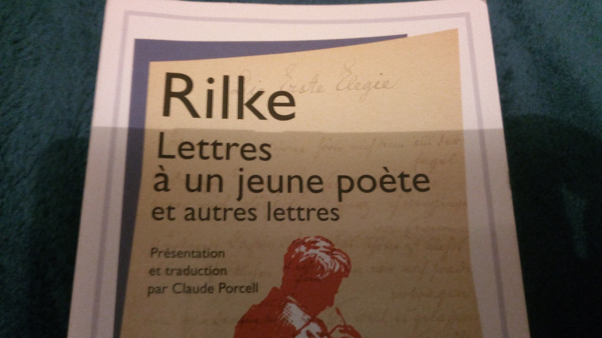

Pour les lettres
Très cher lecteur,
En ce soir du 9 août 2019, je me sens, pour tout dire, seul. Aussi, je lis et me suis inscrit sur un site internet. Mais je pense qu’il faut commencer par le début, pour expliquer pourquoi et à quel point j’aime écrire des lettres – et en recevoir.
– Cet article est vraissemblablement un billet d’humeur écrit sans filtre et que je n’aurais probablement pas le temps de relire avant de publier. D’ailleurs je ne sais pas trop qui va le lire. –
Tout a commencé en 2013 lorsque j’ai eu ma première correspondante épistolaire avec qui j’ai échangé quelques (trop peu de) lettres. Peut-être est-ce ma personalité, peut-être suis-je trop naïf, peut-être me sentais-je trop seul, toujours est-il que j’ai écrit certaines choses que je n’avais jamais dites et que je n’aurais pas confiées à ma propre famille, car comme l’on me l’a dit une fois, plus les gens sont proches de nous et plus leur jugement compte. Quoiqu’il en soit ces enveloppes sont aujourd’hui bien rangées dans l’écritoire dont m’a fait cadeau ma mère (merci maman), avec d’autres d’amis rencontrés ou de connaissances d’internet, de garçons et de filles, en français ou en anglais.
J’ai pris l’habitude de dire, au moins pour moi-même, que recevoir et écrire une lettre sont parmi les plus grands plaisirs de l’existence. Je sais que cet avis n’est pas partagé par toutes et tous, que lorsque l’on envoie une lettre, il faut se fatiguer le poignet à l’écrire à la main, se déplacer à la poste, payer les timbres, mais surtout, surtout, attendre, attendre oh combien longtemps que notre lettre arrive à sa destination, que le correspondant ou la correspondante la lise, laisse reposer, réfléchisse, réponde, poste, et attendre encore que la réponse revienne.
S’il faut dire une chose positive en tout cas et qui est peut-être un avis impopulaire : je suis satisfait du service de la poste française, car jamais une lettre que j’avais écrite ni une qui m’était adressée ne s’est perdue. En cela j’ai confiance.
Ainsi donc, comme je disais au départ, je lis. Justement, les Lettres à un jeune poète (et autres lettres), de Rainer Maria Rilke. Dans ses courriers, l’allemand parle de la solitude, du travail, de l’amour, et comment ces trois choses n’en sont qu’une. (ISBN : 978-2-0812-5453-4) Et je viens de m’inscrire sur un site (N’Oublie Pas d’Écrire – NOPE) pour trouver quelqu’un avec qui échanger du courrier en France, parce que j’ai neuf timbres Astérix à utiliser, et que j’ai envie d’écrire des longs monologues sur les formes des arbres, ce que les relations avec les autres sont difficile mais qu’il est également difficile d’être en bons termes avec soi-même, partager cette phrase qu’on m’a dite un jour : « Il faut parfois toute une vie pour savoir ce qu’on veut faire de sa vie. »
Mais aussi la forme, pratiquer la calligraphie avec les encres noire et rouge, faire un brouillon, structurer, argumenter, donner des exemples, écrire de la poésie, des aphorismes, citer des auteurs… comme une reconnaissance de ce qu’il n’y a rien de plus précieux que ce qui a été fait avec du temps et du cœur, de la recherche de beauté et de, peut-être bien, sagesse.
— Quentin RIBAC.
